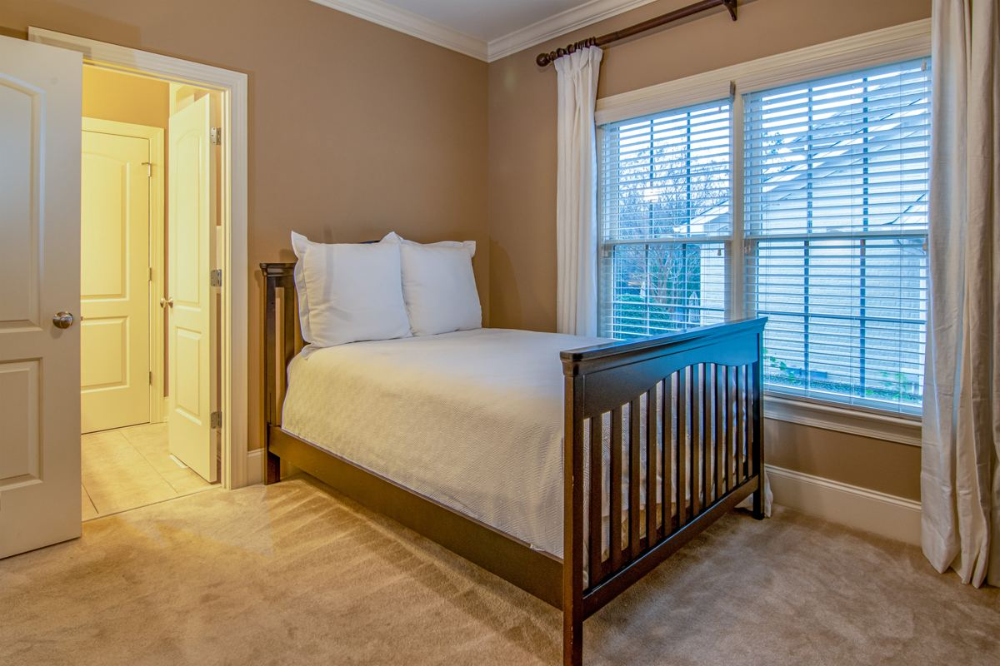

A hospital bed, a wheelchair or a walker needs open floor that most bedrooms do not have. The usual job is one bed, one dresser and a chair out, so the equipment fits and somebody can get around it. It moves fast because there is a delivery date, and the clearing has to happen before that date rather than after.

That date is the whole schedule. Everything below works backward from it.
What the room actually has to fit
Start with the equipment, not the furniture. The home health company, the discharge planner or the equipment supplier will tell you what is being delivered and roughly what it needs. Ask them directly, and ask before you move a thing, because the answer changes what has to leave.
A hospital bed usually needs open floor on both sides so somebody can work from either one, which the bed it replaces never had to allow for. A wheelchair needs a turning path, not just a doorway. A walker needs a route from the bed to the bathroom with nothing in it. Oxygen equipment, a lift, or a bedside commode each take their own footprint. When care ends and the equipment is no longer needed, here is how clearing out the medical equipment works.
Then there is the part people forget: the route in. The equipment has to come through the front door, down the hall and into the room. A narrow hallway with a bookcase in it is a problem on delivery day, and delivery day is a bad time to discover it.
What usually has to leave
More than people expect, and less than they fear. The common list runs about the same in every house.
The existing bed and frame, because the hospital bed is going where it was. A dresser or an armoire, usually the largest single thing in the room. A recliner or an oversized chair. Nightstands that crowd the sides of a bed. A desk nobody has used in years. Bookcases in the hallway. Rugs, which come up for a reason covered below. And the boxes, exercise equipment and storage that quietly moved into the room when it became a spare.
Sometimes a whole room's contents go into the garage instead of leaving. That works, and it is free, right up until the garage is full and the family car is out in the weather. Be honest with yourself about which things are going back in the room afterward and which never will.
Photograph the room before anything moves. If this is temporary, that photo is how the room gets put back. If somebody else in the family is going to ask why a piece of furniture is gone, the photo answers it without an argument.
The order that makes the day work
Measure the route first. Front door, hallway, the bedroom doorway. Then clear in this order.
First, everything on the floor of the route. Hall bookcases, plant stands, side tables, shoe racks, the basket of laundry. Second, the large furniture in the room itself, starting with whatever sits where the bed is going. Third, rugs and anything that slides underfoot. Fourth, the small furniture that crowds the sides of the bed but does not block it, since that comes down to how much room the caregiver needs.
Loose rugs come up because they catch a walker wheel and a foot. The National Institute on Aging covers this in its preventing falls at home, room by room guidance, which is the most useful single page for anybody setting a room up this way. It is worth ten minutes before you decide what stays.
We are haulers, and we will say plainly that we are not the ones to tell you how a room should be arranged for somebody's care. The home health team does that. What we can do is get the furniture out of the way in one trip so the room is ready when the truck comes.
Who pays for the equipment, and why that matters to the timing
This part surprises families, so it is worth knowing before you schedule anything. Medicare covers durable medical equipment such as hospital beds, walkers and wheelchairs under specific conditions, and its durable medical equipment coverage page explains how that works and what a doctor has to order.
Why it matters here is timing. Equipment often gets approved and scheduled quickly once a discharge date is set, which means the clearing window can be a couple of days rather than a couple of weeks. Families who wait for the equipment to be confirmed before clearing the room are usually the ones calling us the day before.
If somebody is moving out of the house rather than back into it, the job is a different one, and downsizing a parent into assisted living covers that path instead.
What happens to the furniture
Usable furniture goes to local donation partners wherever a partner can take it. A solid dresser, a bed frame in good shape and a chair with no tears are all things somebody else can use, and Habitat for Humanity's donate goods page covers what that network takes and how pickups work if you want to route it yourself.
Be realistic about the rest. A mattress somebody has been sick in is not a donation. Neither is a recliner with a torn seat or particle board that is already swelling at the corners. Those get disposed of properly, and metal gets recycled. The longer version of where things end up is in where your junk actually goes after we haul it away.
The awkward pieces are their own conversation. Getting a heavy dresser or a bed frame down a hallway and out a front door without gouging the wall is the actual skill in this job, and old furniture removal covers how a crew plans that path. In Plano specifically, clearing a bedroom set out is usually a one-visit job once the equipment delivery date is set.
How the job runs
Tell us the delivery date first. That is the only thing on our end that changes anything. Then send photos of the room and the hallway, and say what is staying, because plenty of these jobs keep a chair so a visitor has somewhere to sit.
A crew comes out, walks the route, and gives you a firm number before anything is lifted, disposal included. The quote is the bill. They carry things out rather than drag them, they pad what needs padding, and they sweep the room before they leave. Our own people do this work, not gig labor hired off an app that morning, which matters more than usual when somebody in the house is unwell and a stranger is walking through it.
We run seven days a week across the northern suburbs, including Plano, Allen, Frisco, McKinney, Richardson, Little Elm, Prosper, The Colony, Wylie and Fairview. Call before noon and the same afternoon is typical, though typical is the honest word rather than a promise. We work to the same schedule on a bedroom clear-out in Prosper. The service page for this work is furniture removal, and you can send photos as soon as you know the date.
If the goal is somebody staying in their own home for the long run rather than a short recovery, the NIA's aging in place overview is a better starting point than anything we could write.
Frequently asked questions
How quickly can you clear a room?
Often the same day if you call before noon, and usually the next morning if you call later. Tell us the delivery date when you book so we know what we are working against.
Can you move furniture to the garage instead of hauling it away?
We are a removal crew, so what we do well is take things out of the house. If some pieces are being kept, set them aside and tell the crew at the walkthrough which ones are staying put.
What about the old mattress?
We take mattresses. Donation is usually not an option for one, and the disposal rules differ by city, which is covered in our post on mattress disposal in DFW.
Do we need to be there while the crew works?
Somebody should be there for the walkthrough and the quote, and to say what stays. If the person coming home is already in the house, tell us and the crew will work around the room they are in.
Can you tell us how much space the equipment needs?
No, and we would be guessing if we tried. Ask the equipment supplier or the discharge planner. We move what you tell us has to go.
Nobody plans this kind of clearing, and it always has a date on it. The rest of what we haul is on the services page.